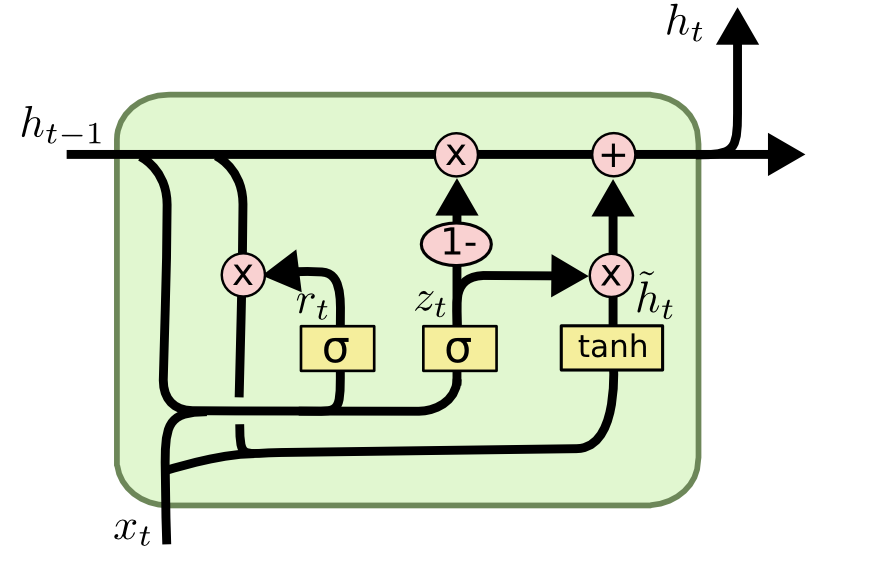

LSTM and GRU
LSTM
The avoid the problem of vanishing gradient and exploding gradient in vanilla RNN, LSTM was published, which can remember information for longer periods of time.
Here is the structure of LSTM:

The calculate procedure are:
$f_t$,$i_t$,$o_t$ are forget gate, input gate and output gate respectively. $\tilde{C_t}$ is the new memory content. $C_t$ is cell state. $h_t$ is the output.
Use $f_t$ and $i_t$ to update $C_t$, use $o_t$ to decide which part of hidden state should be outputted.
GRU

$z_t$ is update gate, $r_t$ is reset gate, $\tilde{h_t}$ is candidate activation, $h_t$ is activation.
Compare with LSTM, GRU merge cell state and hidden state to one hiddent state, and use $z_t$ to decide how to update the state rather than $f_t$ and $i_t$.
Update:
Here is a good article: Illustrated Guide to LSTM’s and GRU’s: A step by step explanation
Ref：
Comments
Comments powered by Disqus